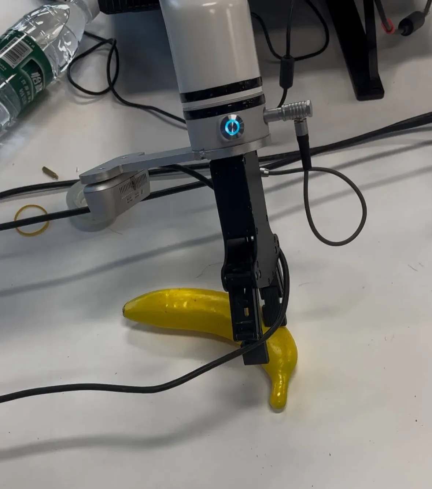
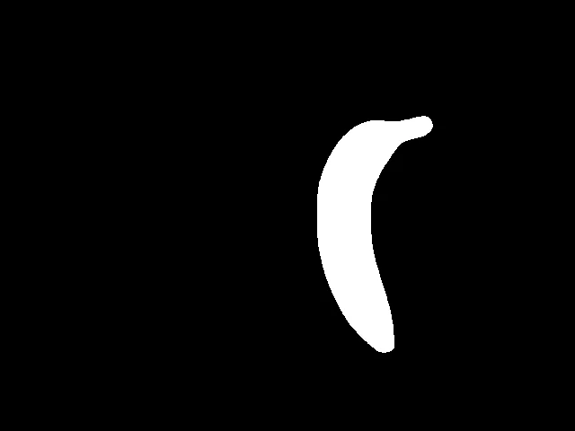

Vision-Based Robotic Grasping with GraspNet
Language-guided target selection and RGB-D grasp planning on an RM65 arm.

- Use Qwen2.5-VL to identify the requested object, then detection and SAM masks to constrain 3D grasp candidates.
- Filter GraspNet poses for collisions and robot approach-angle limits before real-world grasp execution.

